Deploy Server Side Rendering with Angular Universal and Firebase Functions
( Extract from angular official document ) Angular Universal is a technology that renders Angular applications on the server.Why use server-side rendering?
- Facilitate web crawler(SEO)
- Improve performance on mobile and low-powered devices
- Show the first page quickly
In this blog, i will share my notes about how to prepare an application for server-side rendering and deploy the ssr app to Firebase using Firebase Projects and Functions step by step.
- Install package
$ng add @nguniversal/express-engine - Add information for web crawler in component using Title and Meta
constructor( private route: ActivatedRoute, private coursesService: CoursesService, private title: Title, private meta: Meta) {} ngOnInit() { this.course = this.route.snapshot.data["course"]; this.title.setTitle(this.course.description); this.meta.updateTag({name: "description", content: this.course.longDescription}); this.meta.addTag({name: 'twitter:card', content: 'summary'}); this.meta.addTag({name: 'twitter:site', content: '@AngularUniv'}); this.meta.addTag({name: 'twitter:title', content: this.course.description}); this.meta.addTag({name: 'twitter:description', content: this.course.description}); this.meta.addTag({name: 'twitter:text:description', content: this.course.description}); this.meta.addTag({name: 'twitter:image', content: 'https://avatars3.githubusercontent.com/u/16628445?v=3&s=200'}); this.dataSource = new MatTableDataSource([]); this.coursesService.findAllCourseLessons(this.course.id) .subscribe(lessons => this.dataSource.data = lessons); } - Add directive to control whether render or not some elements. The follow is extract of code.
// no render directive @Directive({ selector: "[appShellNoRender]" }) export class AppShellNoRenderDirective implements OnInit { constructor(@Inject(PLATFORM_ID) private platformId, private templateRef: TemplateRef<any>, private viewContainer: ViewContainerRef) { } ngOnInit() { if (isPlatformServer(this.platformId)) { this.viewContainer.clear(); } else { this.viewContainer.createEmbeddedView(this.templateRef); } } }// render directive ngOnInit() { if (isPlatformServer(this.platformId)) { this.viewContainer.createEmbeddedView(this.templateRef); } else { this.viewContainer.clear(); } }// directive in template <div class="spinner-container" *appShellNoRender> <div *ngFor="let item of xx"> <h1>{{ item }}</h1> </div> </div> - Add resolver to preload data for better user experience. Avoid duplicate fetching data using makeStateKey ,TransferState and PLATFORM_ID
@Injectable() export class CourseResolver implements Resolve
{ constructor( private coursesService: CoursesService, private transferState:TransferState, @Inject(PLATFORM_ID) private platformId) { } resolve(route: ActivatedRouteSnapshot, state: RouterStateSnapshot): Observable<Course> { const courseId = route.params['id']; const COURSE_KEY = makeStateKey<Course>("courseKey-" + courseId); if (this.transferState.hasKey(COURSE_KEY)) { const course = this.transferState.get(COURSE_KEY, null); this.transferState.remove(COURSE_KEY); return of(course); } else { return this.coursesService.findCourseById(courseId) .pipe( first(), tap(course => { if (isPlatformServer(this.platformId)) { this.transferState.set(COURSE_KEY, course); } }) ); } } } - Modify outputPath in angular.json. My project name: angular-universal-course.
Firstly, modify outputPath under architect->build, from"outputPath": "dist/angular-universal-course/browser",to"outputPath": "dist/functions/browser",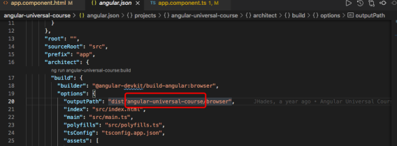 Secondly, in the same file, modify outputPath under server->options, from"outputPath": "dist/angular-universal-course/server",to"outputPath": "dist/functions/server"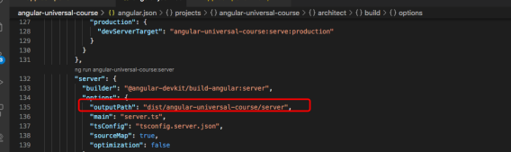 - run the following command and then enter localhost:4200 in the browser address bar to test
$npm run dev:ssr - If test result is ok, build the application
$npm run build:ssr - Angular Universal allows you to prerender the pages of your application. Providing additional routes using a file
$ng run [my-app-name]:prerender --routes-file routes.txt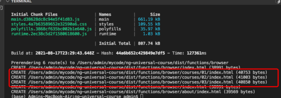 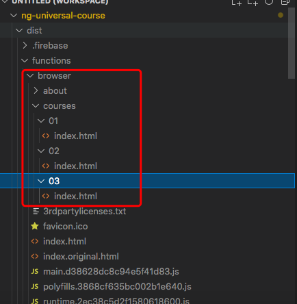 - Modify server.ts under the root folder where tsconfig.json file is located. Change
dist/my-app-name/browsertodist/functions/browserand add websiteFileLocation, because in production environment there is highly possibly no "dist/functions/browser" folder. 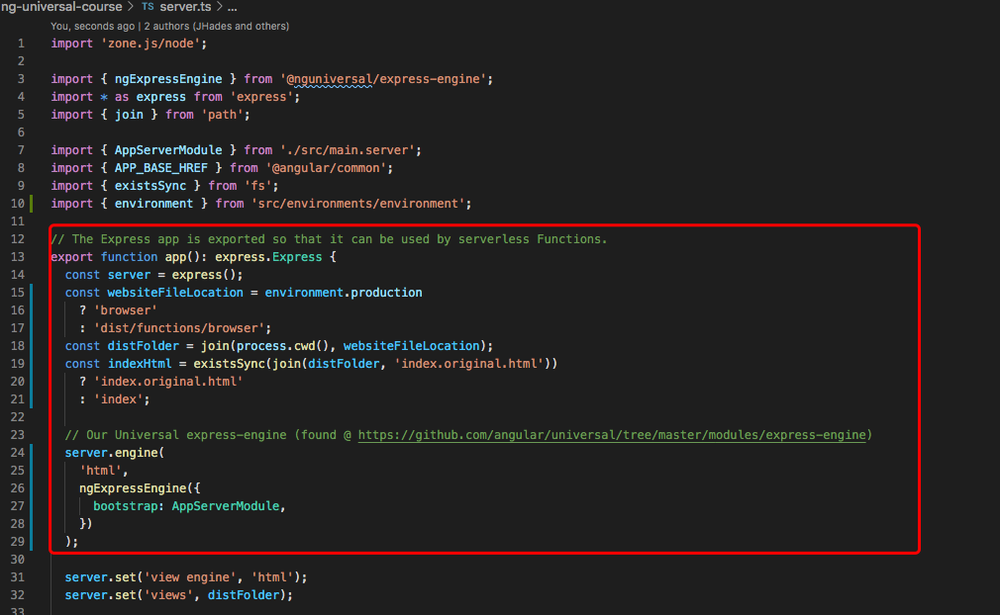 - Initialize the app for deployment on firebase. Choose ●Functions：Configure and deploy Cloud Functions and ●
Hosting: Configure and deploy Firebase Hosting sites
$firebase init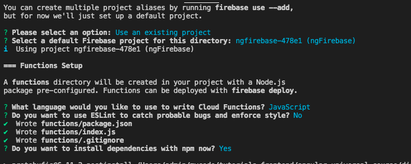 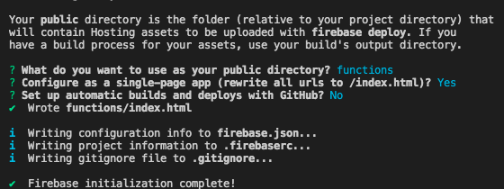 - Copy dependencies in src/package.json to dist/functions/package.json. Under dist/functions folder, run
$npm i - Modify index.js under dist/functions. Attention to function name of exports object, we will use the function name in dist/functions/firebase.json 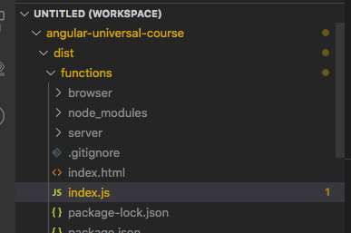 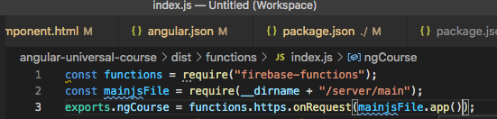
- Modify dist/functions/firebase.json. Change
’destination’: ‘/index.html’to‘function’:’your-function-name-of-exports’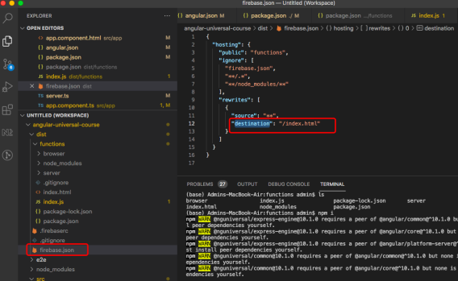
- Delete the extra index.html created by firebase. It is located under dist/functions 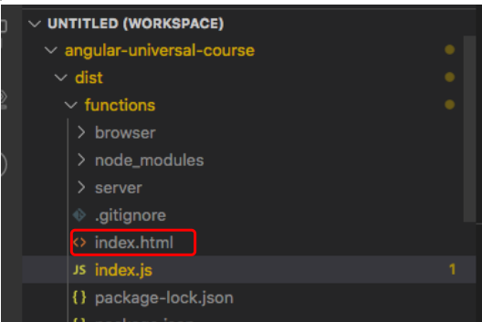
- Run emulator to test. Enter localhost:5000 in browser. If pages can display correctly, we can begin to deploy app in remote server(firebase) 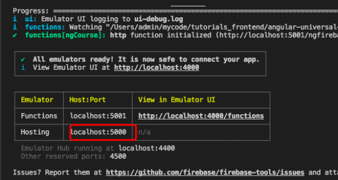
- Deploy the server side render app to firebase
$firebase deploy --only functions,hosting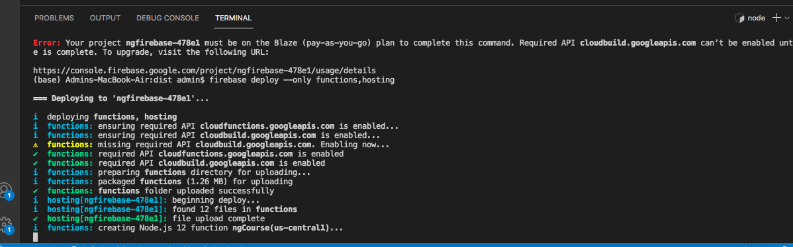 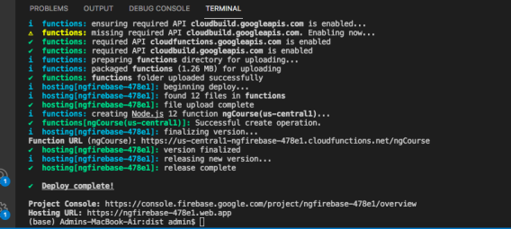 - Source code is hosted on Github server Side render
- My deployment is:https://ngfirebase-478e1.web.app/ 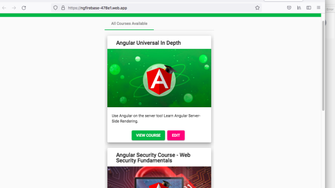
Reference to:
- Video from Youtube Channel Codeible: https://www.youtube.com/watch?v=k7pLxaKkHYs
- Tutorial from Angular University: https://angular-university.io/course/angular-universal-course
<<previous article
Deploy A Routed Localized Angular to Firebase
next article>>